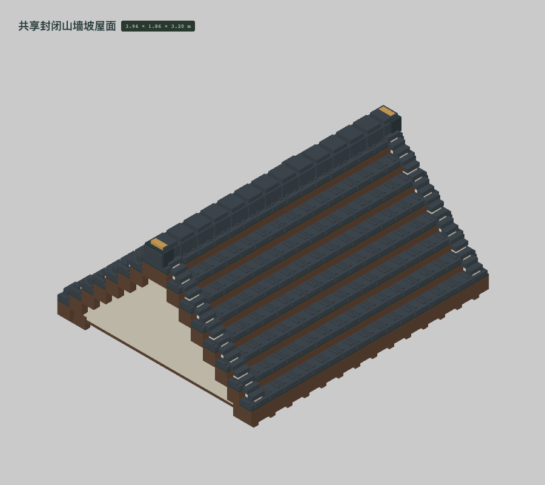
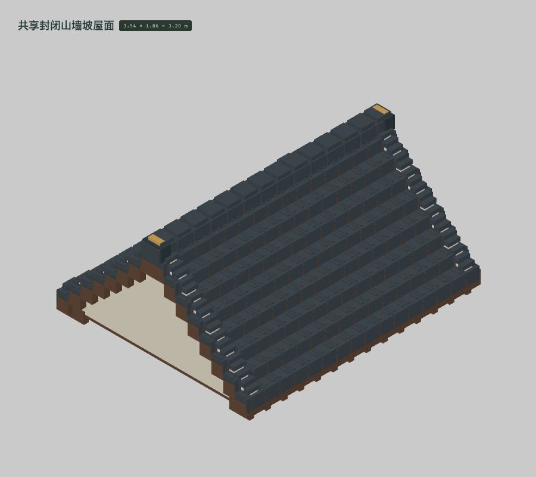
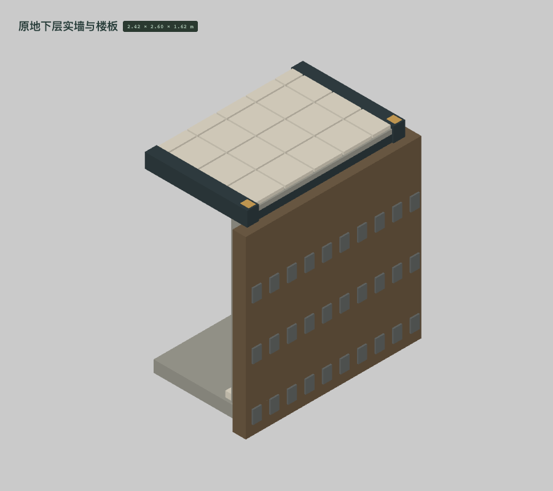

BUILT-011补出瓦片向下搭接的真实竖面，减少大面积裸露木壳；木基层、防水膜、瓦片仍各自保留材质。初次版本 · 600,131 格当前版本 · 600,131 格
BUILT-018将开敞室内侧定为 -Z 正面，土层留在墙后；补出压条、固定销，调整剖面石屑。此项包含实际几何与孔洞朝向修改。初次版本 · 487,220 格当前版本 · 490,292 格
 当前版本 · 490,292 格
当前版本 · 490,292 格